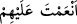

meleklerin “âmin” demesine denk gelirse, önceki günahları bağışlanır.”[168] buyurur.
Bu hadîsin mânâsı Vehb’in sözünde geçenle aynıdır. Bu dinleyenlerin âmîn demesiyle
meleklerin âmîn deyişini ya zaman açısından, ya da ihlâs ve yöneliş açısından birbirine
denk düşmesi şeklindedir. Bu âmîn diyen meleklerin hafaza melekleri mi, yoksa diğer
melekler mi olduğu konusunda ihtilâf vardır. Ancak bu meleklerin hafaza meleklerinden
başka melekler olduğu görüşünü şu hadis güçlendirmektedir: “Sözü (duâsı); ehl-i
semânın sözüne denk düşen” hafaza melekleri ile semâ meleklerinin iki grubunu cem’
etmek ve her ikisinin âmîn demiş olduğunu söylemek sûretiyle iki görüşü birleştirmek
mümkündür.
Molla Fenârî, Tefsîrü’l-Fâtiha adlı eserinde der ki:
Fâtiha, kıdem nûru içindeki fenâ ve adem karanlığından rûhâniyet nûrlarına doğru
kemâle ermekdir. “Ene’l-Hakk” mertebesi sayılabilecek “cem’” makamı ile insaniyet-i
kâmileye varmak için cismâniyet âlemine nefh yoluyla çıkarılmış kimselere, kemâl
nüshasıdır. Ademden vücûda (yokluktan varlığa) gelip cem’ yolunda kemâl arayan bu
tür kişiler, vücûddan tekrar ademe, belki de hudûsten kıdeme dönmek için geldiği inâyet
yollarını gösteren hidâyeti, isteme ihtiyacındadır. Öyle ki bunlar yokluğu bir daha
kaybetmemek üzere bulmak için varlığı bir daha bulamayacak şekilde kaybeder. Cenâb-
ı Hakk’ın: “Kuluma istediği vardır” fermanında gösterildiği üzere, kulun: “Bize doğru
yolu göster!” isteği, kabûl edilince kemâl rütbesini elde etmiştir. Allah Teâlâ’nın Fâtiha
Sûresi’ni “âmin” mührü ile mühürlemesi işâret ediyor ki, bu mührü açmak sûretiyle
hiçbir kimse ihlâslı kullar üzerinde tasarrufta bulunamaz. İşte şeytan bu yüzden
ümidsizliğe düşmüş ve “ihlâslı kulların hâriç” (Sâd, 38/83) demiştir.
Cumhûrun görüşüne göre, Fâtiha sûresinin âyetleri yedidir. Âyetlerden birisi, sonu “
” diye bitendir. Yoksa besmele değildir. Diğer bir görüşe göre de; “besmele
bir âyettir.” denmiştir.
et-Teysîr’de der ki: “Fâtiha’daki kelime sayısı yirmibeş, harf sayısı da 123’tür.
Aynü’l-Meânî adlı eserde Fâtiha’nın kelime sayısı yirmiyedi, harf sayısı 142 diye
yazılıdır. Bu ihtilâfın sebebi, “Besmele”nin Fâtiha’dan sayılmayacağı husûsu ile âyet
sonlarındaki kelimelerin bitişik veya ayrı yazılacağı konusundaki görüş ayrılığıdır.
Yazılan veya telâffuz edilen harflerle ilgili görüşler de ihtilâfın bir başka sebebidir.
Atâ (r.a.)’ya Fâtiha’nın ne zaman nâzil olduğu sorulduğunda demiştir ki: Mekke’de ve
bir Cuma gününde. Allah Teâlâ kulu Muhammed’e ikrâm olsun diye 7000 melekle
Cebrâîl’i bu sûreyi inzâl için gönderdi.
Rivâyete göre Ebû Cehil’e aid zengin mallarla yüklü bir kafile Şam’dan yedi grup
hâlinde geldi. Allah Rasûlü ve ashâbı gelen bu kafileye bakıyordu. Sahâbîlerin çoğu aç
ve çıplaktı. Allah elçisinin gönlüne düştü ki, ashâbının zarûrî ihtiyaçlarını
karşılayabilecek bir şeylere sâhib olsa! Bunun üzerine bu âyet nâzil oldu: “Şu kesin ki,